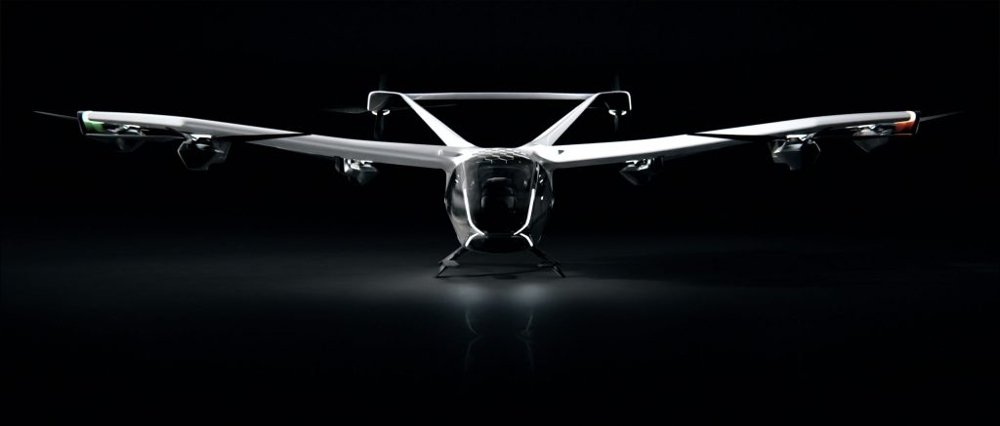
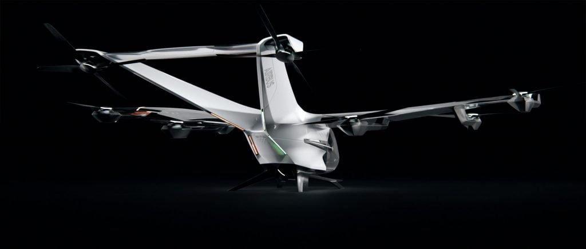
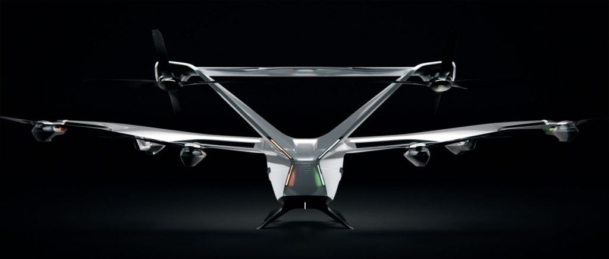
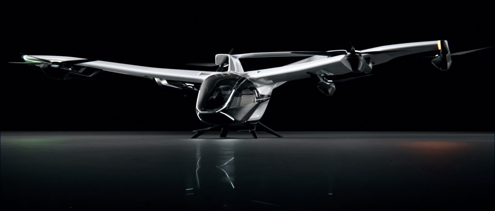

ယခုထုတ်ဖေါ်ပြသလိုက်တဲ့ မိုးပျံ တက္ကစီဟာ အဲယားဘတ်စ် လေကြောင်းကုမ္ပဏီကြီးရဲ့ မြို့တွင်း မိုးပျံတက္ကစီ ဝန်ဆောင်မှု စီမံကိန်းရဲ့ အစိတ်အပိုင်း တခု ဖြစ်ပါတယ်။ လျှပ်စစ်ကို အသုံးပြုထားတာမို့ ကာဘွန်ဒိုင်အောက်ဆိုဒ် နဲ့ လေထုညစ်ညမ်းစေတဲ့ ဓါတ်ငွေ့တွေ လုံးဝ ထွက်လာတာ မရှိပါဘူး။ ပြီးတော့ မြို့တွင်းလမ်းတွေကနေ ဒေါင်လိုက်တည့်တည့် တက်ဆင်းနိုင်အောင်လဲ ပြုလုပ်ထားပါတယ်။

တက္ကစီမှာ တောင်ပံ ပါရှိမှာ ဖြစ်ပြီး အမြှီးကတော့ V ပုံစံ နှစ်ခွနဲ့ ဒီဇိုင်းလုပ်ထားပါတယ်။ ပျံသန်းမှု အတွက် လျှပ်စစ်စွမ်းအင်သုံး ပန်ကာ ၈ ခု တပ်ဆင်ထားပါတယ်။ ဒီ တက္ကစီဟာ အသံဆူညံမှု အလွန်နည်းတယ်လို့ ဆိုပါတယ်။ ပျံသန်းနေချိန်မှာ ၆၅ ဒက်ဆီဘယ်လ် ဆူညံမှု ရှိပြီး အဆင်းအတက် လုပ်ချိန်မှာတော့ ၇၀ ဒက်ဆီဘယ်လ် အထိပဲ အသံဆူညံတာမို့ အသံအတော် တိတ်ဆိတ်တယ်လို့ ဆိုလို့ရပါတယ်။

ယခု မိုးပျံတက္ကစီကို Airbus ရဲ့ ရဟတ်ယာဉ် ဌာနကနေ တီထွင်ဖန်တီးထားတာ ဖြစ်ပါတယ်။ ၂၀၂၀ ခုနှစ်က ထုတ်ဖော်ပြသခဲ့တဲ့ CityAirbus မူရင်း မို့ပျံတက္ကစီကို အဆင့်မြှင့်တင် ထားတာ ဖြစ်ပါတယ်။ မူလ မိုးပျံတက္ကစီကို ၂၀၁၆ ကတဲက စတင် တီထွင်ခဲ့ပြီး ၂၀၂၀ မှာ ထုတ်ဖော်ပြသ ခဲ့တာပါ။ ဒီ မိုးပျံတက္ကစီတွေဟာ ယခုလက်ရှိ မြို့ကြီးတွေပေါ်မှာ ပျံသန်းပြီး ခရီးသည် ပို့ဆောင်ရေး လုပ်နေတဲ့ ရဟတ်ယာဉ်တွေ နေရာမှာ အစားထိုး အသုံးပြုဖို့ ရည်ရွယ်ခဲ့တာ ဖြစ်ပါတယ်။
မိုးပျံတက္ကစီကို ထုတ်လုပ်ဖို့ ကြိုးစားခဲ့တာ အဲ့ယားဘတ်စ်က မထမဆုံးတော့ မဟုတ်ပါဘူး။ ယခင်ကလဲ Voom တို့၊ Uber Copter တို့ ထုတ်ဖို့ ကြိုးစားခဲ့ သလို အဲယားဘတ်စ် ကုမ္ပဏီကလဲ Vahana နာမည်နဲ့ ထုတ်ခဲ့ဖူးပါတယ်။


လက်ရှိမှာတော့ ဒီ မိုးပျံတက္ကစီဟာ ဒီဇိုင်းအသေးစိတ် ဆွဲတဲ့ အဆင့်မှာပဲ ရှိပါသေးတယ်။ ပထမဆုံး ပျံသန်းမှုကို ၂၀၂၃ မှာ ပြုလုပ်မယ်လို့ အဲယားဘတ်စ်ရဲ့ သတင်းထုတ်ပြန်ချက်မှာ ဖော်ပြထားပါတယ်။ အကယ်လို့ အားလုံး အဆင်ပြေတယ်ဆို ပျံသန်းခွင့် လိုင်စင်ကို ၂၀၂၅ ခုနှစ်ထဲမှာ ရရှိနိုင်မယ်လို့ မျှော်လင့်ထားပါတယ်။
Reference: Airbus revealed a new version of its CityAirbus flying EV built to fly quietly over urban areas
September 23, 2021